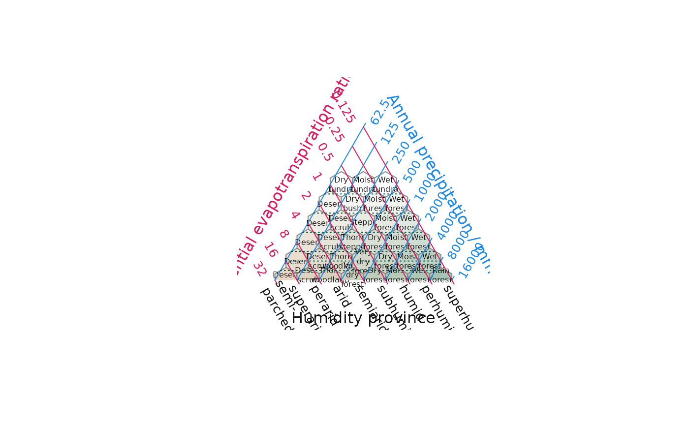

HoldridgePlot() creates a blank triangular plot, as proposed by
Holdridge (1947, 1967), onto which potential evapotranspiration
(PET) ratio and annual precipitation data can be plotted
(using the AddToHoldridge() family of functions) in order to interpret
climatic life zones.
HoldridgePlot(
atip = NULL,
btip = NULL,
ctip = NULL,
alab = "Potential evapotranspiration ratio",
blab = "Annual precipitation / mm",
clab = "Humidity province",
lab.offset = 0.22,
lab.col = c("#D81B60", "#1E88E5", "#111111"),
xlim = NULL,
ylim = NULL,
lab.cex = 1,
lab.font = 0,
tip.cex = lab.cex,
tip.font = 2,
tip.col = "black",
isometric = TRUE,
atip.rotate = NULL,
btip.rotate = NULL,
ctip.rotate = NULL,
atip.pos = NULL,
btip.pos = NULL,
ctip.pos = NULL,
padding = 0.16,
col = NA,
panel.first = NULL,
panel.last = NULL,
grid.lines = 8,
grid.col = c(NA, "#1E88E5", "#D81B60"),
grid.lty = "solid",
grid.lwd = par("lwd"),
grid.minor.lines = 0,
grid.minor.col = "lightgrey",
grid.minor.lty = "solid",
grid.minor.lwd = par("lwd"),
hex.border = "#888888",
hex.col = HoldridgeHypsometricCol,
hex.lty = "solid",
hex.lwd = par("lwd"),
hex.cex = 0.5,
hex.labels = NULL,
hex.font = NULL,
hex.text.col = "black",
axis.cex = 0.8,
axis.col = c(grid.col[2], grid.col[3], NA),
axis.font = par("font"),
axis.labels = TRUE,
axis.lty = "solid",
axis.lwd = 1,
axis.rotate = TRUE,
axis.pos = NULL,
axis.tick = TRUE,
ticks.lwd = axis.lwd,
ticks.length = 0.025,
ticks.col = grid.col,
...
)
HoldridgeBelts(
grid.col = "#004D40",
grid.lty = "dotted",
grid.lwd = par("lwd")
)
HoldridgeHexagons(
border = "#004D40",
hex.col = HoldridgeHypsometricCol,
lty = "dotted",
lwd = par("lwd"),
labels = NULL,
cex = 1,
text.col = NULL,
font = NULL
)Character string specifying text to title corners,
proceeding clockwise from the corner specified in point (default: top).
Character string specifying text with which to label
the corresponding sides of the triangle.
Left or right-pointing arrows are produced by
typing \\U2190 or \\U2192, or using expression('value' %->% '').
Numeric specifying distance between midpoint of axis label
and the axis.
Increase padding if labels are being clipped.
Use a vector of length three to specify a different offset for each label.
Character vector specifying colours for axis labels. Use a vector of length three to specify a different colour for each label.
Numeric vectors of length 2 specifying the minimum and
maximum x and y limits of the plotted area, to which padding will be
added.
The default is to display the complete height or width of the plot.
Allows cropping to magnified region of the plot. (See vignette for diagram.)
May be overridden if isometric = TRUE; see documentation of
isometric parameter.
Numeric specifying character expansion (font size) for axis labels. Use a vector of length three to specify a different value for each direction.
Numeric specifying font style (Roman, bold, italic, bold-italic) for axis titles. Use a vector of length three to set a different font for each direction.
Logical specifying whether to enforce an equilateral shape
for the ternary plot.
If only one of xlim and ylim is set, the other will be calculated to
maintain an equilateral plot.
If both xlim and ylim are set, but have different ranges, then the limit
with the smaller range will be scaled until its range matches that of the
other limit.
Integer specifying number of degrees to rotate label of rightmost apex.
Integer specifying positioning of labels,
iff the corresponding xlab.rotate parameter is set.
Numeric specifying size of internal margin of the plot; increase if axis labels are being clipped.
The colour for filling the plot; see
polygon.
An expression to be evaluated after the plot axes are
set up but before any plotting takes place.
This can be useful for drawing backgrounds, e.g. with ColourTernary()
or HorizontalGrid().
Note that this works by lazy evaluation: passing this argument from other
plot methods may well not work since it may be evaluated too early.
An expression to be evaluated after plotting has taken
place but before the axes and box are added. See the comments about
panel.first.
Integer specifying the number of grid lines to plot.
Colours to draw the grid lines. Use a vector of length three to set different values for each direction.
Character or integer vector; line type of the grid lines. Use a vector of length three to set different values for each direction.
Non-negative numeric giving line width of the grid lines. Use a vector of length three to set different values for each direction.
Integer specifying the number of minor (unlabelled) grid lines to plot between each major pair.
Parameters to pass to
HoldridgeHexagons(). Set to NA to suppress hexagons.
Fill colour for hexagons. Provide a vector specifying a
colour for each hexagon in turn, reading from left to right and top to
bottom, or a function that accepts two arguments, numerics pet and prec,
and returns a colour in a format accepted by
polygon().
Parameters passed to
text() to plot hex.labels.
38-element character vector specifying label for each hexagonal class, from top left to bottom right.
Numeric specifying character expansion (font size) for axis labels. Use a vector of length three to set a different value for each direction.
Colours for the axis line,
tick marks and tip labels respectively.
Use a vector of length three to set a different value for each direction.
axis.col = NULL means to use par('fg'), possibly specified
inline, and ticks.col = NULL means to use whatever colour
axis.col resolved to.
Font for text. Defaults to par('font').
This can either be a logical value specifying whether (numerical) annotations are to be made at the tickmarks, or a character or expression vector of labels to be placed at the tick points.
Line type for both the axis line and tick marks. Use a vector of length three to set a different value for each direction.
Line width for the axis line and tick marks. Zero or negative values will suppress the line or ticks. Use a vector of length three to set different values for each axis.
Logical specifying whether to rotate axis labels
to parallel grid lines, or numeric specifying custom rotation for each axis,
to be passed as srt parameter to text(). Expand margins or set
par(xpd = NA) if labels are clipped.
Vector of length one or three specifying position of axis
labels, to be passed as pos parameter to text(); populated automatically
if NULL (the default).
Logical specifying whether to mark the axes with tick marks.
Numeric specifying distance that ticks should extend beyond the plot margin. Also affects position of axis labels, which are plotted at the end of each tick. Use a vector of length three to set a different length for each direction.
Additional parameters to plot.
Colour to use for hexagon borders.
Graphical parameters specifying properties of hexagons to be plotted.
Vector specifying labels for life zone hexagons to be plotted.
Suggested values: holdridgeClassesUp, holdridgeLifeZonesUp.
Colour of text to be printed in hexagons.
HoldridgePoints(), HoldridgeText() and related functions allow data
points to be added to an existing plot; AddToHoldridge() allows plotting
using any of the standard plotting functions.
HoldridgeBelts() and HoldridgeHexagons() plot interpretative lines
and hexagons allowing plotted data to be linked to interpreted climate
settings.
Holdridge (1947), "Determination of world plant formations from simple climatic data", Science 105:367–368. doi:10.1126/science.105.2727.367
Holdridge (1967), Life zone ecology. Tropical Science Center, San José
Other Holdridge plotting functions:
AddToHoldridge(),
HoldridgeHypsometricCol(),
holdridgeClasses,
holdridge
data(holdridgeLifeZonesUp, package = "Ternary")
HoldridgePlot(hex.labels = holdridgeLifeZonesUp)
HoldridgeBelts()
